소방설비기사(기계분야) (2005-05-29 기출문제)
1과목: 소방원론
1. 1g의 물체를 1℃만큼 온도 상승 시키는데 필요한 열량을 나타내는 것은?
- 잠열
- 복사열
- 비열
- 열용량
(정답률: 71%)

2. 피난계획에 관한 설명으로 옳지 않은 것은?
- 계단의 배치는 집중화를 피하고 분산한다.
- 피난동선에는 상용의 통로, 계단을 이용토록 한다.
- 방화구획은 단순 명확하게 하고 적절히 세분화 한다.
- 계단은 화재시 연도로 되기 쉽기 때문에 직통계단으로 하지 않는 것이 좋다.
(정답률: 50%)
3. 후래쉬 오버(Flash over)란?
- 건물 화재에서 가연물이 착화하여 연소하기 시작하는 단계이다.
- 건물 화재에서 발생한 가연가스가 일시에 인화하여 화염이 확대되는 단계이다.
- 건물 화재에서 화재가 쇠퇴기에 이른 단계이다.
- 건물 화재에서 가연물의 연소가 끝난 단계이다.
(정답률: 73%)
4. 유류를 저장한 상부 개방탱크의 화재에서 일어날 수 있는 특수한 현상들에 속하지 않는 것은?
- 후레쉬 오버(Flash over)
- 보일 오버(Boil over)
- 슬롭 오버(Slop over)
- 후로스 오버(Froth over)
(정답률: 60%)
5. 우리나라 화재의 원인 중 가장 많은 것은?
- 유류
- 전기
- 담배불
- 방화
(정답률: 60%)
6. 다음 중 자연발화성을 일으키기 가장 쉬운 것은?
- 사염화탄소
- 휘발유
- 등유
- 아마인유
(정답률: 44%)
7. 소화원리(消火原理)에 대한 것이 아닌 것은?
- 질식(窒息)소화
- 가압(加壓)소화
- 제거(除去)소화
- 냉각(冷却)소화
(정답률: 78%)
8. 건물내부에서의 연소 확대 방지수단이 아닌 것은?
- 방화구획
- 날개벽 설치
- 방화문 설치
- 건축설비에의 연소방지 조치
(정답률: 67%)
9. 연소의 4대 요소로 옳은 것은?
- 가연물-열-산소-발열량
- 가연물-발화온도-산소-반응속도
- 가연물-열-산소-순조로운 연쇄반응
- 가연물-산화반응-발열량-반응속도
(정답률: 65%)
10. 다음 물질 중 인화점이 가장 낮은 것은?
- 에틸알콜
- 등유
- 경유
- 디에틸에테르
(정답률: 54%)
11. 다음 물질 중 물과 반응하여 가연성 기체를 발생하지 않는 것은?
- 칼륨
- 인화아연
- 산화칼슘
- 탄화알루미늄
(정답률: 50%)
12. 유류탱크 화재시의 슬롭오버현상이 아닌 것은?
- 연소면의 온도가 100℃이상일 때 발생
- 폭발로 인한 유류탱크 파괴후 유출된 연소유에서 발생
- 연소면의 폭발적 연소로 탱크 외부까지 화재가 확산
- 소화시 외부에서 뿌려지는 물에 의하여 발생
(정답률: 42%)
13. 인체의 폐에 가장 큰 자극을 주는 기체는?
- CO2
- H2
- CO
- N2
(정답률: 77%)
14. 화재가 발생했을 때 초기진화나 확대방지를 위한 대책이 아닌 것은?
- 스프링클러설비
- 연결송수구설비
- 자동화재탐지설비
- 갑종방화문설비
(정답률: 53%)
15. 과산화 물질을 취급할 경우의 주의사항으로 가장 관계가 먼 내용은?
- 가열, 충격, 마찰을 피한다.
- 가연물질과의 접촉을 피한다.
- 용기에 옮길 때는 개방용기를 사용한다.
- 환기가 잘되는 차가운 장소에 보관한다.
(정답률: 80%)
16. 가연성액체가 개방된 상태에서 증기를 계속 발생시키면서 연소가 지속될 수 있는 최저온도를 무엇이라고 하는가?
- 인화점
- 연소점
- 발화점
- 기화점
(정답률: 58%)
17. 다음은 화재하중을 구하는 공식이다. 여기에서 화재하중 Q의 단위에 해당되는 것은?
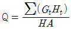
- ㎏/m2
- kcal/m2
- ㎏.kcal/m2
- kcal.m2/㎏
(정답률: 57%)
18. 건물화재에 대비하는 것으로 가장 중요시 하는 것은?
- 인명의 피난
- 시설의 보호
- 소방대원의 진입
- 화재부하의 대소
(정답률: 74%)
19. 건축물 화재시 제2차 안전구획은?
- 복도
- 전실
- 지상
- 계단
(정답률: 40%)
20. 출화는 화재를 말하는데, 옥외출화의 시기를 나타낸것은?
- 천장속이나 벽에 발염착화한 때
- 창이나 출입구 등에 발염착화한 때
- 화염이 외부를 완전히 뒤덮을 때
- 화재가 건물의 외부에서 발생해서 내부로 번질 때
(정답률: 65%)
2과목: 소방유체역학
21. 할론 1211의 구성원소들 중 어떤 원소가 소화작용에 주도적 역할을 하는가?
- 탄소
- 브롬
- 불소
- 염소
(정답률: 39%)
22. 기체상태의 할론 1301은 공기보다 몇 배 무거운가? (단, 할론 1301의 분자량은 149이고, 공기는 79%의 질소, 21%의 산소로만 구성되어 있다고 한다.)
- 약 4.55배
- 약 4.90배
- 약 5.17배
- 약 5.55배
(정답률: 58%)
23. 다음 소화약제 중 상온 상압하에서 액체인 것은?
- 탄산가스
- 할론 1301
- 할론 2402
- 할론 1211
(정답률: 53%)
24. 점성계수의 단위로는 포아즈(Poise)를 사용하는데 포아즈는 어느 것인가?
- cm2/s
- N·s/m2
- dyne/cm·s
- dyne·s/cm2
(정답률: 53%)
25. 한계 산소농도(% O2)를 알 경우에 이산화탄소의 이론적 최소 소화농도(% CO2)를 구하는 식으로 맞는 것은?
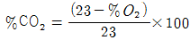
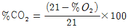
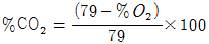
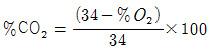
(정답률: 70%)
26. 원관속의 흐름에서 관의 직경, 유체의 속도, 유체의 밀도, 유체의 점성계수가 각각 D, V, ρ, μ 로 표시될 때 층류 흐름의 마찰계수 f 는 어떻게 표현될 수 있는가?
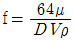
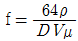
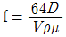
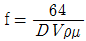
(정답률: 44%)
27. 낙구식 점도계는 어떤 법칙을 이론적 근거로 하는가?
- Stokes의 법칙
- Newton의 점성법칙
- Hagen-Poiseuille의 법칙
- Boyle의 법칙
(정답률: 59%)
28. U자관에서 어느 액체의 25 cm와 수은 4 cm 높이가 서로 평행을 이루고 있다면 이 액체의 비중은?
- 1.176
- 2.176
- 3.176
- 4.176
(정답률: 48%)
29. 부차 손실계수가 K=5인 밸브를 관마찰계수 f=0.025, 지름 2 cm인 관으로 환산한다면 등가 길이는?
- 2 m
- 2.5 m
- 4 m
- 5 m
(정답률: 34%)
30. 10 kW의 전열기를 2시간 사용하였다. 이때 전방열량은 몇kJ인가?
- 10780
- 17200
- 45276
- 72000
(정답률: 40%)
31. 내경 10 ㎝인 배관내에 비중 0.9인 유체가 평균속도 10m/s로 흐를 때 질량유량은 몇 kg/s 인가?
- 7.07
- 70.7
- 3.53
- 35.3
(정답률: 45%)
32. 원추 확대관에서 손실계수를 최소로 하는 원추각도는?
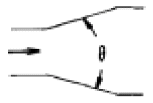
- 60° 근방
- 45° 근방
- 15° 근방
- 7° 근방
(정답률: 20%)
33. 어떤 액체의 비중을 측정하기 위하여 납으로 만든 추(무게 4 N, 체적 1.29×10-4 m3)를 액체 중에 넣고 무게를 재었더니 2.97 N이었다. 이 액체의 비중은 얼마인가? (단, 물의 비중량은 9800 N/m3이다.)
- 8.15
- 4.08
- 1.63
- 0.815
(정답률: 27%)
34. 온도 30℃, 최초 압력 98.67 kPa인 공기 1 ㎏을 단열적으로 986.7 kPa까지 압축한다. 압축일은 몇 KJ인가? (단,공기의 비열비는1.4,기체상수 R=0.287 kJ/kg·K이다)
- 100.23
- 187.43
- 202.34
- 321.84
(정답률: 25%)
35. 그림과 같이 수조에 붙어 있는 상하 두 노즐에서 물이 분출하여 한 점(A)에서 만날려고 하면 어떤 관계의 식이 성립되어야 하는가? (단, 공기저항과 노즐의 손실은 무시한다.)
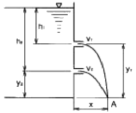
- h1y1 = h2y2
- h1y2 = h2y1
- h1h2 = y1y2
- h1y1 = 2h2y2
(정답률: 45%)
36. 12층 건물의 지하 1층에 제연설비용 배연기를 설치하였다 이 배연기의 풍량은 500 m3/min이고, 풍압은 30 mmAq였다 이때 배연기의 동력은 몇 kW로 해주어야 하는가? (단, 배연기의 효율은 60% 이고, 여유율은 10% 이다.)
- 4.08
- 4.49
- 5.55
- 6.11
(정답률: 45%)
37. 처음에 온도, 비체적이 각각 T1, v1인 이상기체 1 kg을 압력을 P로 일정하게 유지한 채로 가열하여 온도를 4 T1까지 상승시킨다. 이상기체가 한 일은 얼마인가 ?
- Pv1
- 2Pv1
- 3Pv1
- 4Pv1
(정답률: 64%)
38. 판의 절대온도 T가 시간 t에 따라 T=Ct1/4 로 변하고 있다. 여기서 C 는 상수이다. 이 판의 흑체방사도는 시간에 따라 어떻게 변하는가? (단, ￡는 Stefan-Boltzman 상수이다.)
- σC
- σC4
- σC4 t
- σ4C4 t
(정답률: 37%)
39. A 지점의 압력은 계기압으로 몇 kPa인가?
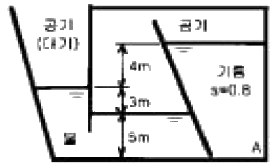
- 123.48
- -27.34
- 523.64
- -332.16
(정답률: 22%)
40. 그림과 같이 물이 수조에 연결된 파이프를 통해 분출하고 있다. 수면과 파이프의 출구사이에 총 손실수두가 200 mm이다. 이 때 파이프에서의 방출유량은 몇 m3/s 인가?
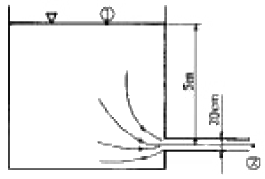
- 0.285
- 0.295
- 0.3⑤
- 0.315
(정답률: 22%)
3과목: 소방관계법규
41. 제4류 위험물의 지정수량 연결이 잘못된 것은?
- 아세톤-400리터
- 휘발유-200리터
- 등유-1000리터
- 초산메틸에스테르-4000리터
(정답률: 50%)
42. 특정소방대상물 중 노유자시설에 속하지 않는 것은?
- 군휴양시설
- 요양시설
- 아동복지시설
- 장애인재활시설
(정답률: 69%)
43. 소화난이도등급Ⅲ의 알킬알루미늄을 저장하는 이동탱크저 장소에 자동차용소화기 2개 이상을 설치한 후 추가로 설치하여야 할 마른모래는 몇 리터 이상인가?
- 50리터 이상
- 100리터 이상
- 150리터 이상
- 200리터 이상
(정답률: 27%)
44. 위험물제조소 등에 옥외소화전을 설치하려고 한다. 옥외소화전을 5개 설치시 필요한 수원의 양은 얼마인가?(오류 신고가 접수된 문제입니다. 반드시 정답과 해설을 확인하시기 바랍니다.)
- 14m3 이상
- 35m3 이상
- 36m3 이상
- 54m3 이상
(정답률: 34%)
45. 일반 소방시설설계업의 기계분야의 영업범위는 연면적 몇 m2 미만의 특정소방대상물에 대한 소방시설의 설계인가?
- 10,000
- 20,000
- 30,000
- 50,000
(정답률: 48%)
46. 특수가연물을 쌓아 저장하는 기준이 아닌 것은?
- 물질별로 구분하여 쌓을 것
- 쌓는 높이는 20m이하가 되도록 할 것
- 쌓는 부분의 바닥면적은 50m2이하가 되도록 할 것
- 쌓는 부분의 바닥면적 사이는 1m 이상이 되도록 할 것
(정답률: 37%)
47. 다중이용업소에 설치하는 실내장식물은 원칙적으로 불연재료 또는 준불연재료로 하여야 하는데 합판또는 목재로 설치한 실내장식물의 면적이 천장과 벽을 합한 면적의 얼마 이하가 되면 방염처리 대상에서 제외되는가? (단, 간이 스프링클러설비가 설치된 특정소방대상물임)
- 3/10 이하
- 4/10 이하
- 5/10 이하
- 6/10 이하
(정답률: 46%)
48. 소방대상물의 방염처리업 등록의 영업정지 또는 취소대상에 해당하지 않는 것은?
- 거짓 그 밖의 부정한 방법으로 등록을 한 때
- 정당한 사유 없이 계속하여 6개월간 휴업한 때
- 다른 자에게 등록증 또는 등록수첩을 빌려준 때
- 등록을 한 후 정당한 사유 없이 1년이 지나도록 영업을 개시하지 아니한 때
(정답률: 59%)
49. 예방규정을 정하여야 하는 제조소등의 관계인은 예방규정을 정하여 언제까지 시·도지사에게 제출하여야 하는가?
- 제조소등의 착공 신고 전
- 제조소등의 완공 신고 전
- 제조소등의 사용 시작 전
- 제조소등의 탱크안전성능시험 전
(정답률: 32%)
50. 화재의 원인 및 피해 등에 대한 조사의 의무를 가진 자는?
- 시·도지사
- 행정자치부장관
- 소방본부장 또는 소방서장
- 관할 경찰서장
(정답률: 52%)
51. 자동화재탐지설비 설치대상으로 틀린 것은?
- 근린생활시설로서 연면적 600m2 이상인 것
- 교육연구시설로서 연면적 2,000m2 이상인 것
- 지하구
- 길이 500m 이상의 터널
(정답률: 63%)
52. 소방대상물에 대한 개수명령권자는?
- 행정자치부 장관
- 시·도지사
- 소방본부장·소방서장
- 소방방재청장
(정답률: 37%)
53. 다음 중 소방시설관리업의 보조 기술인력으로 등록할 수 없는 자는?
- 소방설비기사
- 산업안전기사
- 소방설비산업기사
- 소방공무원 3년 이상 근무 경력자로 소방시설 인정자격수첩을 교부 받은 자
(정답률: 60%)
54. 화재조사와 관련된 내용으로서 바르지 못한 것은?
- 화재조사 전담부서에는 발굴용구, 기록용기기, 감식용기기 등의 장비를 갖추어야 한다.
- 화재조사는 소화활동과 동시에 실시하여야 한다.
- 화재의 원인과 피해조사를 위하여 시·도 소방본부와 소방서에 전담부서를 설치·운영한다.
- 소방방재청장은 화재조사에 관한 시험에 합격한 자에 대해 2년마다 전문보수교육을 실시하여야 한다.
(정답률: 35%)
55. 소방서장은 소방대상물에 대한 위치·구조·설비 등에 관하여 화재가 발생하는 경우 인명피해가 클 것으로 예상되는 때에는 소방대상물의 개수·사용의 금지 등의 필요한 조치를 명할 수 있는데 이때 그 손실에 따른 보상을 하여야 하는 바, 해당되지 않은 사람은?
- 특별시장
- 도지사
- 행정자치부장관
- 광역시장
(정답률: 58%)
56. 소방기본법에 의해서 행정자치부장관ㆍ소방본부장 또는 소방서장은 구조대를 편성·운영하여야 하는 바, 특수구조대에 속하지 않은 것은?
- 화학구조대
- 항공구조대
- 수난구조대
- 고속국도구조대
(정답률: 41%)
57. 다음 중 화재경계지구의 지정대상지역이 아닌 곳은?
- 시장지역
- 공장·창고가 밀집한 지역
- 주택이 밀집한 지역
- 위험물의 저장 및 처리시설이 밀집한 지역
(정답률: 53%)
58. 다중이용업소에 설치해야 할 소방시설이 아닌 것은?
- 소화설비
- 방화설비
- 피난설비
- 경보설비
(정답률: 58%)
59. 방화관리업무를 수행하지 아니한 특정소방대상물의 관계인의 벌칙은?
- 200만원이하의 과태료
- 200만원이하의 벌금
- 300만원이하의 과태료
- 300만원이하의 벌금
(정답률: 29%)
60. 화재조사의 시기는?
- 소화활동전에 먼저 실시
- 소화활동과 동시에 실시
- 소화활동후에 즉시 실시
- 소화활동후 2시간이내에 실시
(정답률: 69%)
4과목: 소방기계시설의 구조 및 원리
61. 그림의 CO2 전역방출방식에서 선택 밸브의 위치로서 적당한 곳은?
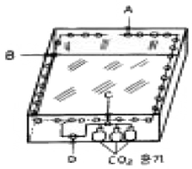
- A
- B
- C
- D
(정답률: 54%)
62. 주요 구조부가 내화구조이고 건널복도에 설치된 층에 피난기구 수의 산출방법으로 적당한 것은?
- 원래의 수에서 1/2 을 감소한다.
- 원래의 수에서 건널복도 수를 더한 수로 한다.
- 원래의 수에서 건널복도 수의 2배에 해당하는 수를 뺀 수로 한다.
- 피난기구를 설치하지 아니할 수 있다.
(정답률: 74%)
63. 포소화설비에서 약제용 가압장치를 따로 가지고 있는 방식은?
- 라인 프로포셔너 방식
- 프레져 사이드 프로포셔너 방식
- 프레져 프로포셔너 방식
- 펌프 프로포셔너 방식
(정답률: 74%)
64. 폐쇄형 스프링클러 헤드를 사용하는 스프링클러 설비의 급수 배관 중 구경이 50mm인 배관에는 스프링클러 헤드를 몇개까지 설치할수 있는가? (단, 헤드는 반자 아래에만 설치한다.)
- 3개
- 5개
- 10개
- 12개
(정답률: 39%)
65. 연소할 우려가 있는 부분에 드렌처 설비를 설치 하였다. 한개 회로에 드렌처 헤드 5개씩 2개 회로를 설치하였을 경우에 드렌처 설비에 필요한 수원의 량은 얼마인가?
- 2m3
- 4m3
- 8m3
- 16m3
(정답률: 50%)
66. 습식 스프링클러 설비 배관의 통수소제에 관한 설명으로 옳은 것은?
- 테스트코넥션(시험배관)의 밸브를 개방함으로써 통수 소제를 실시할 수 있다.
- 교차관의 말단부로 부터 배수하는 방법으로 통수소제를 실시할 수 있다.
- 알람밸브 2차측의 앵글밸브를 개방하여 배관내의 물을 배수시켜 통수소제를 실시할 수 있다.
- 배관의 통수소제는 최소한 월 1회씩 실시하게 된다.
(정답률: 39%)
67. 물 분무 소화설비의 가압송수장치 압력수조의 압력을 산출할때 필요한 압력이 아닌 것은?
- 낙차의 환산 수두압
- 배관의 마찰손실 수두압
- 소방용 호스의 마찰손실 수두압
- 분무헤드의 설계 압력
(정답률: 60%)
68. 다음은 호스릴 이산화탄소 설비의 설치기준이다. 옳지 않은 것은?
- 노즐당 소화약제 방출량은 20℃에서 60초에 60㎏ 이상이어야 한다.
- 소화약제 저장용기는 호스릴 2개 마다 1개 이상 설치해야 한다.
- 소화약제 저장용기의 가장 가까운 보기 쉬운 곳에 표시 등을 설치해야 한다.
- 약제 개방밸브는 호스의 설치장소에서 수동으로 개폐할 수 있어야 한다.
(정답률: 57%)
69. 급기 가압방식으로 실내를 가압할 때, 가압용의 유입공기량에 대한 설명 중 옳은 것은?
- 실내외의 틈새면적에 정비례한다.
- 실내외의 기압차에 정비례한다.
- 실내외의 틈새면적에 반비례한다.
- 실내외의 기압차에 반비례한다.
(정답률: 48%)
70. 옥내 소화전 설비에서 소화전 말단 노즐의 구경이 13mm이고, 방수압이 2.6kgf/cm2 이었다면, 이 노즐을 통하여 방사되는 방수량은 얼마인가?
- 192[ℓ]
- 130[ℓ]
- 156[ℓ]
- 178[ℓ]
(정답률: 40%)
71. 분말소화설비에서 가압용가스로 이산화탄소를 사용하는 것에 있어서 이산화탄소는 소화약제 1kg에 대해 배관의 청소에 필요한 량 몇 g을 가산한 양 이상으로 하는가?
- 10
- 20
- 30
- 40
(정답률: 54%)
72. 제연설비 설치의 설명 중 제연구역의 구획으로서 그 기준에 옳지 않은 것은?
- 거실과 통로는 상호 제연구획 할 것
- 하나의 제연구역의 면적은 600m2이내로 할 것 (단, 구조상 부득이한 경우는 1000m2 이내로 할 수 있다.)
- 하나의 제연구역은 직경 60m 원내에 들어갈 수 있을 것
- 하나의 제연구역은 2개이상 층에 미치지 아니하도록 할 것
(정답률: 62%)
73. 압력 챔버의 구조에 대한 설명 중 잘못된 것은?
- 압력챔버의 구조는 몸체, 압력스위치, 안전밸브, 드레인밸브, 유입구 및 압력계로 이루어져 있다.
- 몸체의 동체모양은 원통형으로서 길이방향의 이음매가 1개소 이하이어야 한다.
- 몸체의 경판 모양은 접시형, 반타원형 또는 온 반구형이어야 한다.
- 몸체의 경판은 이음매가 1개소 이어야 한다.
(정답률: 39%)
74. 상수도 소화용수설비의 소화전은 소방대상물의 수평투영면의 각 부분에서 몇 m가 되도록 설치하는가?
- 200m 이하
- 140m 이하
- 100m 이하
- 70m 이하
(정답률: 69%)
75. 옥외소화전설비 및 급수관로가 노후하여 성능시험(유량/압력)을 한 결과, 2.5 kgf/cm2 압력에서 300 리터/분 용량이 방출되는 것으로 확인되었다. 법정 최소 방사량인 350 리터/분 용량을 방사하고자 할 경우에 요구되는 소화전 방수압력(kgf/cm2)은?
- 2.8 kgf/cm2
- 3.0 kgf/cm2
- 3.2 kgf/cm2
- 3.4 kgf/cm2
(정답률: 24%)
76. 할론1301설비 고압식 저장용기의 경우, 21℃에서 얼마의 압력으로 축압되어야 하는가?
- 20 kgf/cm2
- 35 kgf/cm2
- 42 kgf/cm2
- 52 kgf/cm2
(정답률: 72%)
77. 폐쇄형 헤드를 사용하는 연결살수설비의 수원으로 적합하지 않는 것은?
- 수도배관
- 소방펌프자동차
- 옥상수조
- 지하수 배관
(정답률: 44%)
78. 가연성 가스의 저장취급시설에 설치하는 연결살수설비의 헤드 설치기준이 아닌 것은?
- 연결살수설비의 전용 헤드인 개방형 헤드를 설치
- 헤드 상호간의 거리는 3.7m이하
- 가스저장탱크, 가스홀더 및 가스 발생기 주위에 설치
- 헤드의 살수범위는 가스저장탱크 가스홀더 및 가스 발생기의 몸체 아래 부분이 포함 되도록 한다.
(정답률: 50%)
79. 상수도 소화용수설비의 소화전에 설치되는 부속장치가 아닌 것은?
- 제수밸브
- 소화전 배수밸브
- 소화전 전용 호스함
- 제수밸브맨홀
(정답률: 38%)
80. 상수도소화용수설비의 소화전의 지하매설배관으로 가장 적당한 종류의 배관은?
- 배관용 탄소강관, 흑관
- 배관용 탄소강관, 연관
- 수도용 주철관
- 도관
(정답률: 46%)